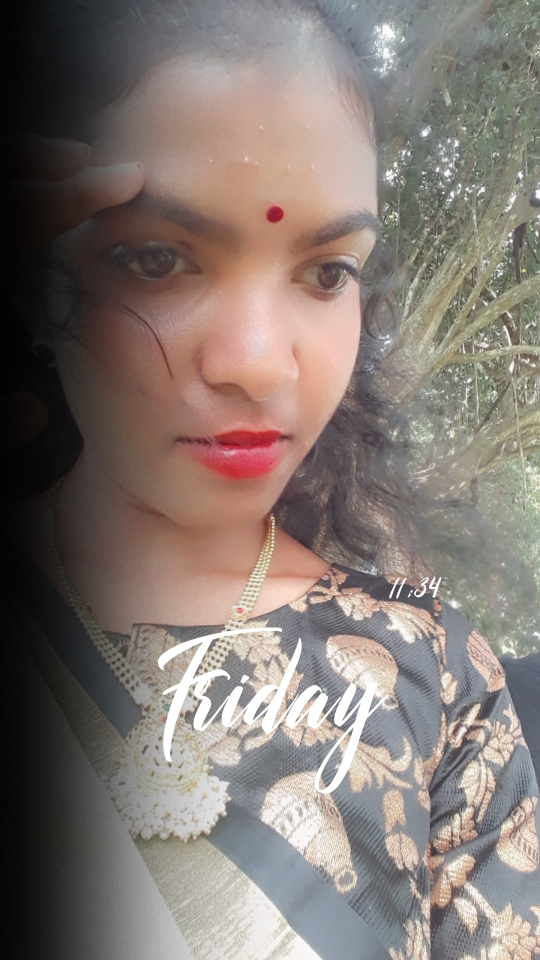

About Me

Hello! I'm Janai, and I'm passionate about all things technology. As a dedicated IT student, I've embarked on a thrilling journey to explore the ever-evolving world of Information Technology. This website is a window into my experiences, skills, and aspirations in the IT field.
A Bit About Myself
I'm currently pursuing my Bachelor's degree in Information Communication Technology at University of Vavuniya, where I've had the privilege of
delving deep into various aspects of IT, from software development
to Quality Assistant. My insatiable curiosity and determination drive me to excel in my studies and explore new horizons in the digital realm..
My Passion for IT
Beyond academics, I'm deeply passionate about staying up-to-date with the latest tech trends, and contributing to open-source
projects. I believe that technology has the power to shape our future, and I'm excited to be part of the innovation driving that change.
Thank you for visiting my website and taking the time to get to know me better. I'm looking forward to connecting with you and exploring the endless possibilities that the world of IT has to offer.